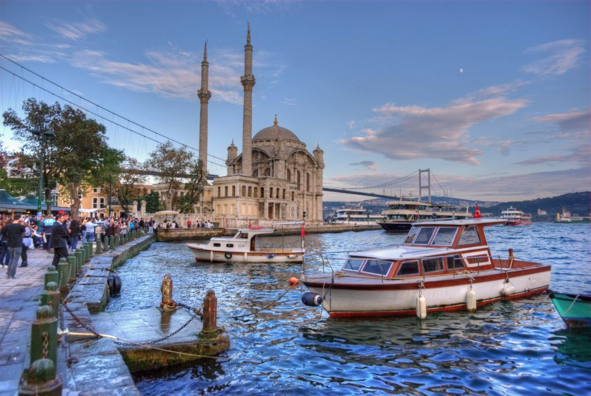
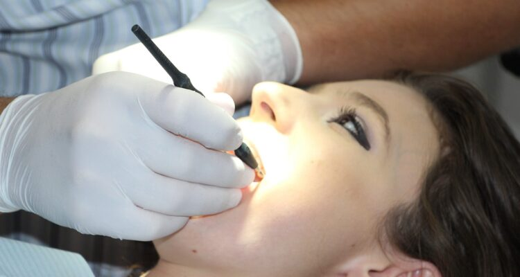

En
En  Ar
Ar İstanbulİstanbul is located on a peninsula surrounded by the Marmara Sea, the Bosporus and the Golden Horn.
İstanbul, Türkiye'nin en büyük şehirlerinden biridir ve Avrupa ile Asya'yı ayıran İstanbul Boğazı'nın iki yanında yer alır. Bizans ve Osmanlı imparatorluklarına başkentlik yapmış, zengin bir kültürel mirasa sahip tarihi bir şehirdir. Ayasofya ve Sultanahmet Camii gibi güzel mimarisi ve Kapalıçarşı gibi hareketli çarşılarıyla tanınır. İstanbul aynı zamanda popüler bir turizm merkezidir ve Avrupa ile Asya arasındaki geçit olarak kabul edilir.
Topkapı Sarayı

Topkapı Sarayı, Sultanahmet Bölgesi'nde yer alan tarihi bir saraydır.
yaklaşık 400 yıl boyunca Osmanlı padişahlarının birinci ikametgahıydı. Saray 15. yüzyılda inşa edilmiştir ve birkaç avlu, Harem (padişah ve ailesinin özel mahallesi) ve çeşitli müzeler dahil olmak üzere bir bina kompleksine sahiptir. Saray, girift çini işçiliği, süslü dekorasyonu ve İstanbul Boğazı ile Haliç'in etkileyici manzaraları ile tanınır. Ayrıca Topkapı hançeri, Kaşıkçı Elması ve Hz. Muhammed'e ait olduğuna inanılan Kutsal Hırka gibi birçok önemli dini ve tarihi eseri barındırmaktadır. Bugün saray bir müze olarak halka açık ve popüler bir turizm merkezi olmasının yanı sıra UNESCO Dünya Mirası Listesi'nde yer alıyor.
Yerebatan sarnıcı

Yerebatan sarnıcı olarak da bilinen Yerebatan Sarnıcı, Sultan Ahmet semtinde bulunan bir yer altı sarnıcıdır. 6. yüzyılda Bizans İmparatorluğu döneminde yakındaki saray ve şehre su sağlamak için inşa edilmiştir. Sarnıç, yaklaşık 140x70 metre boyutlarında bir yer altı odasıdır ve 336 adet mermer sütunla desteklenmiştir. İçi suyla dolu ve sütun kaidesi olarak kullanılan Medusa başı heykelleri ve Medusa'nın baş aşağı duran başları da dahil olmak üzere çeşitli ilginç özelliklerle dekore edilmiş. Halka açık olan sarnıç, İstanbul'un en çok turist çeken ve mutlaka görülmesi gereken yerlerindendir. Ayrıca birkaç film, müzik videosu ve hatta bazı fotoğraf çekimleri için bir yer olarak kullanılır.
Sultan Ahmed Cami

Sultan Ahmed Camii , İstanbul'da bulunan tarihi bir camidir. 17. yüzyılın başlarında Sultan I. Ahmed döneminde inşa edilmiş ve şehrin en ikonik yerlerinden biri olarak kabul ediliyor. Cami, altı minaresi ve ona adını veren mavi çinileriyle tanınır. Caminin içi de karmaşık çini işçiliği ve hat sanatının yanı sıra birkaç büyük avize ile bezenmiştir. Cami hala aktif bir ibadet yeri olmakla birlikte, aynı zamanda turistik bir cazibe merkezi olarak halka da açıktır. Ziyaretçiler girmeden önce ayakkabılarını çıkarmalı ve başlarını örtmelidir. Ziyaretçilerin namaz vakitlerinde de içeri girmesine izin verilmiyor. Sultanahmet Camii aynı zamanda UNESCO Dünya Mirası listesindedir.
Fener ve Balat

Rum mahallesi Fener ve Yahudi mahallesi Balat, İstanbul'un en popüler turistik bölgeleri olan eşsiz tarihi bölgelerdir. Burada bulunan tarih kesinlikle görülmeye değer. Yerli ve yabancı pek çok turistin gezip görmek için tercih ettiği bölge, antikacıları, turistik kafe ve restoranları ile oldukça dikkat çekicidir.
Galata kulesi

Galata Kulesi, İstanbul'da bulunan bir ortaçağ taş kulesidir. 14. yüzyılda şehirdeki Ceneviz kolonisi tarafından Galata semtinin surlarının bir parçası olarak yaptırılmıştır. Kule yaklaşık 66 metre yükseklikte duruyor ve gözlem güvertesinden şehrin panoramik manzarasını sunuyor. Mimarisi ve tasarımı ile de bilinen kule silindir şeklinde olup 9 katlıdır, her birinin farklı kullanımları vardır, zemin katı restoran, üst katları ise seyir terası ve kafe olarak kullanılmaktadır. Kule, şehrin tarihinde önemli bir rol oynamış ve hapishane, yangın kulesi ve gözetleme kulesi gibi çeşitli amaçlarla kullanılmıştır. Bugün, Galata Kulesi önemli bir turistik cazibe merkezi ve İstanbul manzarasını seyretmek için popüler bir nokta.
Boğaz

İstanbul Boğazı, Avrupa ve Asya'yı ayıran, İstanbul, Türkiye'den geçen bir boğazdır. Karadeniz'i Marmara Denizi ve Akdeniz'e bağlar. Uluslararası nakliye için önemli bir su yoludur ve aynı zamanda doğal manzaraları, tarihi simge yapıları ve kültürel önemi ile tanınan popüler bir turizm merkezidir. Ziyaretçiler manzaraları görmek ve manzaranın tadını çıkarmak için tekne turlarına katılabilir. Boğaz köprüsü ve iki deniz altı tüneli şehrin iki yakasını birbirine bağlıyor. Ayrıca yüzme, balık tutma ve su sporları için önemli bir noktadır.
Dolmabahçe Sarayı

Dolmabahçe Sarayı 19. yüzyılda Osmanlı İmparatorluğu döneminde inşa edilmiş ve 1856'dan 1922'ye kadar padişahların ana ikametgahı olarak hizmet vermiştir. Saray, Osmanlı ve Avrupa mimari tarzlarının bir karışımını, görkemli bir girişi, süslü dekorasyonu ve etkileyici avizeleri ile göze çarpmaktadır. . Toplam 285 odası, 43 salonu ve 6 hamamı ile zenginliği ve ihtişamıyla tanınır. Aynı zamanda dünyanın en büyük Bohem kristal avizesini ve dünyadaki en kapsamlı Osmanlı İmparatorluğu dönemi mobilya koleksiyonunu içerir. Müze olarak halka açık olan saray, Osmanlı padişahlarının lüks yaşam tarzı hakkında fikir veren popüler bir turizm merkezidir.
İstiklal Caddesi

İstiklal Caddesi ünlü bir yaya caddesidir. Canlı atmosferi, tarihi önemi ve çeşitli mağaza, kafe, restoran ve barlarıyla tanınır. Ayrıca Galatasaray Lisesi, Fransız Sarayı ve St. Anthony of Padua Kilisesi gibi tarihi yapılara da ev sahipliği yapmaktadır. Aynı zamanda cadde boyunca uzanan tarihi tramvaya da ev sahipliği yapmaktadır. Şehrin kültürünü ve tarihini keşfetmek, alışveriş yapmak ve deneyimlemek için harika bir yerdir. Aynı zamanda bir UNESCO geçici liste sitesidir.
Aziz Antony Kilisesi

Padua Aziz Antony Kilisesi, 17. yüzyılın başlarında inşa edilmiş İstiklal caddesi Taksim bölgesinde bulunan bir Roma Katolik kilisesidir. Şehrin en eski kiliselerinden biridir ve Katolik cemaati için bir ibadet yeri olarak hizmet vermektedir ve ziyaretçilerin mimarisine hayranlık duymaları ve tarihi hakkında bilgi edinmeleri için açıktır.
Kız Külesi

Leander's Tower olarak da bilinen Kız Kulesi, İstanbul'da İstanbul Boğazı'nda küçük bir ada üzerinde bulunan bir kuledir. Arkasında zengin bir efsane ve tarih olan kültürel bir eserdir. Popüler bir turizm merkezidir ve şehrin harika manzaralarını sunmaktadır. Ziyaretçiler tekneyle ulaşabilen kule, kafe ve restoran olarak halka açıktır.
Çamlıca Külesi
Çamlıca Kulesi, İstanbul'un en yüksek noktası olan Çamlıca Tepesi'nin üzerinde bulunan bir TV ve radyo kulesidir. Kule şehrin ve Boğaz'ın panoramik manzarasını sunar, halka açıktır ve ziyaretçiler manzaranın tadını çıkarmak için asansöre binebilir.
Kapalı çarşı

Kapalıçarşı olarak da bilinen Kapalıçarşı, dünyanın en büyük ve en eski kapalı çarşılarından biridir. İstanbul, Türkiye'de bulunur ve 61 kapalı caddeye ve 4.000'den fazla mağazaya sahiptir. Çarşı, takıları, seramikleri, halıları, dokumaları ve hediyelik eşyalarıyla ünlüdür. Hem yerel halk hem de İstanbul'a gelen ziyaretçiler için popüler bir turizm merkezi ve önemli bir alışveriş merkezidir. Geçmişi 15. yüzyıla kadar uzanan bu bölge, yüzyıllardır önemli bir ticaret merkezi olmuştur. Aynı zamanda UNESCO Dünya Mirası Listesi'ndedir.
Adalar

Adalar, Marmara Denizi'nde, İstanbul'un önünde bulunan dokuz ada grubudur. Doğal güzellikleri, sakin atmosferi ve tarihi önemi ile tanınan popüler bir turizm merkezidir. Adalara araba giremez ve yalnızca feribotla erişilebilir. Bisiklete binmek, yürüyüş yapmak, yüzmek ve piknik yapmak için popülerdirler. Adalar ayrıca manastırlar, saraylar ve kiliseler dahil olmak üzere birçok tarihi mekana ev sahipliği yapmaktadır. Aralarında en bilineni, en büyük ada olan ve çok sayıda tarihi ev, konak ve 19. yüzyıldan kalma Phanar Rum Ortodoks Koleji'nin bulunduğu Büyükada'dır. Adalar aynı zamanda hem yerel halk hem de turistler için şehrin koşuşturmacasından kaçmak ve daha rahat bir yaşam temposunun tadını çıkarmak için popüler bir yerdir.Prens Adaları, Marmara Denizi'nde, İstanbul'un önünde bulunan dokuz ada grubudur. Doğal güzellikleri, sakin atmosferi ve tarihi önemi ile tanınan popüler bir turizm merkezidir. Adalara araba giremez ve yalnızca feribotla erişilebilir. Bisiklete binmek, yürüyüş yapmak, yüzmek ve piknik yapmak için popülerdirler. Adalar ayrıca manastırlar, saraylar ve kiliseler dahil olmak üzere birçok tarihi mekana ev sahipliği yapmaktadır. Aralarında en bilineni, en büyük ada olan ve çok sayıda tarihi ev, konak ve 19. yüzyıldan kalma Phanar Rum Ortodoks Koleji'nin bulunduğu Büyükada'dır. Adalar aynı zamanda hem yerel halk hem de turistler için şehrin koşuşturmacasından kaçmak ve daha rahat bir yaşam temposunun tadını çıkarmak için popüler bir yerdir.
Mısır Çarşısı

Mısır Çarşısı olarak da bilinen Mısır Çarşısı, İstanbul'da bulunan tarihi bir çarşıdır. Çok çeşitli baharatları, otları, çayları ve diğer gıda maddeleri ile tanınır. 17. yüzyıla kadar uzanan çarşı, popüler bir turizm merkezi ve yerel halk için önemli bir alışveriş noktasıdır. Geleneksel ve modern mağazaların bir karışımına sahiptir ve aynı zamanda İstanbul'un tarihini ve kültürünü keşfetmek için harika bir yerdir.
Beylerbeyi Sarayı

Beylerbeyi Sarayı, İstanbul'da bulunan tarihi bir saraydır, 19. yüzyılda inşa edilmiş ve Osmanlı padişahlarının yazlık olarak hizmet vermiştir. Zarif mimarisi, süslü dekorasyonu, güzel bahçeleri ve tarihi önemi ile tanınır. Bugün müze olarak halka açıktır.
Yıldız Sarayı

Yıldız Sarayı, İstanbul'da bulunan tarihi bir saraydır. 19. yüzyılda inşa edilmiş ve Osmanlı padişahları ve sarayları için konut olarak hizmet vermiştir. Saray kompleksi birkaç bina, köşk ve geniş bir park içerir. Güzel mimarisi ve tarihi önemi ile tanınır. Günümüzde müze olarak ziyarete açıktır.
Ortaköy

Ortaköy, İstanbul'un Avrupa yakasında yer alan bir mahalledir. İstanbul Boğazı kıyısında yer alır ve pitoresk sahili ve tarihi camisi ile bilinir. Mahallede ayrıca çeşitli mağazalar, restoranlar ve kafeler bulunur ve bu da burayı popüler bir turizm merkezi haline getirir.
- Türkiye’de Meme Büyütme 2021-10-17
-  Türkiye’de Diş Tedavisi 2022-09-14
-
 Türkiye'de Diş Tedavisi Fiyatları
2021-04-14
Türkiye'de Diş Tedavisi Fiyatları
2021-04-14
 Hair Transplant
Hair Transplant
“Dr Hasan, has been fantastic in their service for my FUE procedure with roughly 2500 grafts. Dr Hasan wrote in-depth and comprehensive emails detailing the procedure and reassuring me of all my concerns. Even though I live in Spain, he would often reply very late his time with such detailed emails.”
 WhatSapp Sohbet ...
WhatSapp Sohbet ...